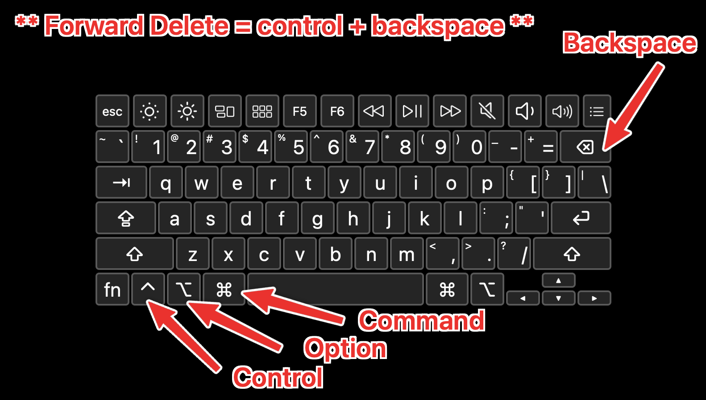

Better Keyboard Layout Tips
I'm constantly finding new ways to make me more efficient on my computer which is really important given the amount of time we all spend on them. While my list of optimizations is very long, there are some simple keyboard changes that offer large increases in comfort/productivity without much effort.
As a reminder, this is the Mac keyboard layout with a legend to avoid confusion about which keys I'm referring to in this article.
Better Arrow Keys
Problem: Arrow keys are too far from home row.
Solution: Map left, down, up, right to h, j, k, l when holding right command.
For all the developers reading, this is my modern Vim compromise.
Better Backspace And Forward Delete
Problem: Backspace is too hard to reach, and forward delete is hidden behind a key combination.
Solution: Map backspace to right shift and forward delete to the original backspace key.
This might not be for everyone. I have never used my right shift key always capitalizing all my letters with left shift.
Better Control And Escape
Problem: Control is too far from home row, and escape is too hard to reach.
Solution: Map caps lock to escape when tapped but left control when held.
I use the escape key a lot with the Link Hints web extension and Vimac app which are both incredible complements to these keyboard changes.
Another Better Control
Problem: Left control makes it hard to switch tabs in various apps with control + tab
Solution: Swap left control and fn mappings.
To switch tabs in most apps using control + tab is pretty uncomfortable with it in its normal position next to the option key.
I hope this also serves as a fun reminder that you can change things. Just remember, the hard part about making things better isn't in the creation or fixing of a problem; it is noticing it in the first place.
(I use Karabiner – Mac only – to make these changes. I'd love to help you get this set up if you aren't super techy – just email me. I'm sure there is a similar app for Windows, but I am not sure what that is.)
2025-07-14